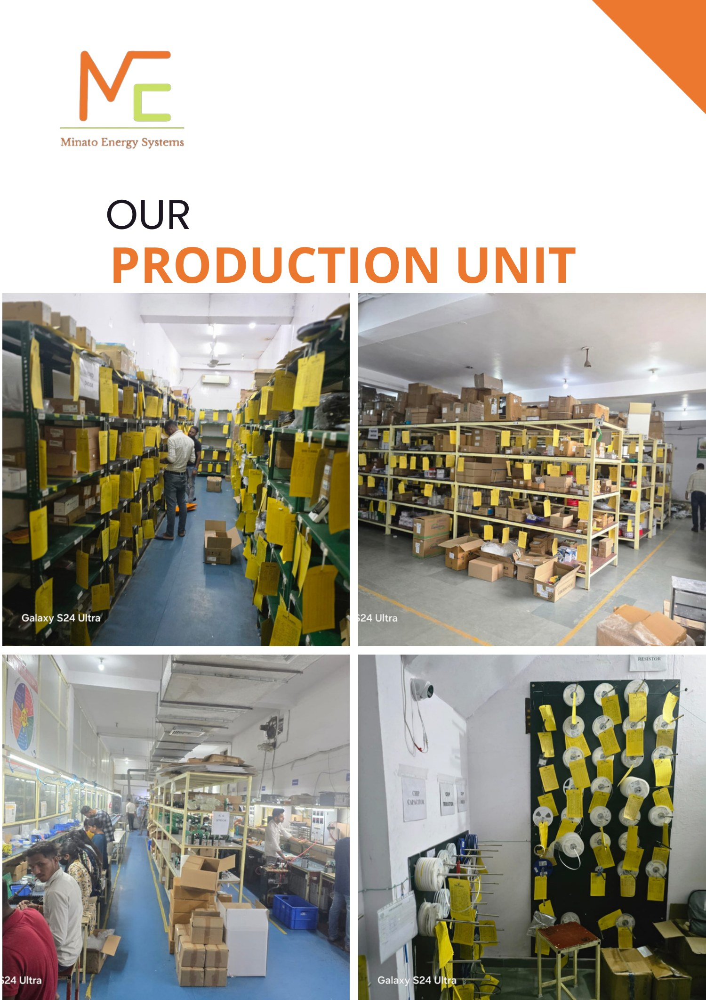
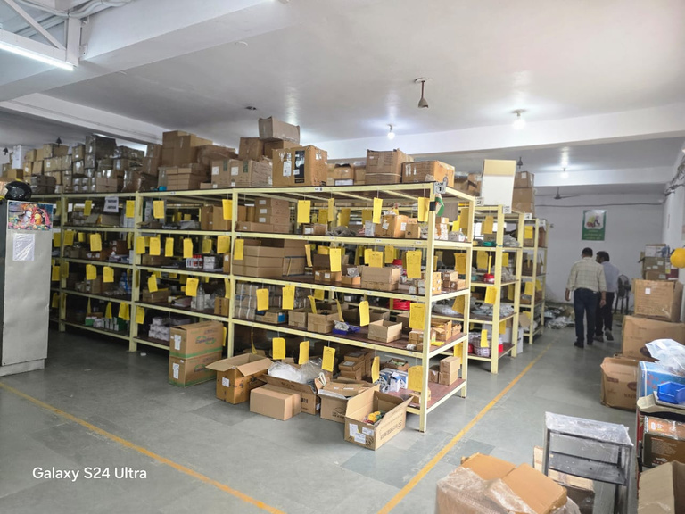
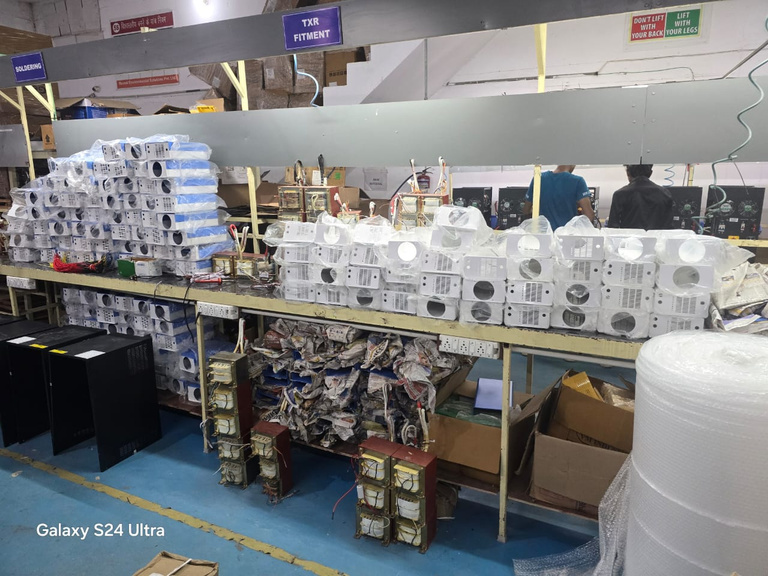

WHO WE ARE
In-house capability.
One-stop solutions.
Minato Energy Systems Private Limited describes itself as a manufacturer of EV chargers, SITC AC/DC charging stations and lithium batteries in India, with an emphasis on innovative, high-quality and made-in-India products.
Its experience in batteries, electronics and software supports a broad range of solutions, while its engineering, design and testing capabilities are intended to provide comprehensive energy and power solutions.

OUR PRODUCTION UNIT
VISION / MISSION
Reliable technology for a sustainable future.
Minato's stated vision is to be a leading provider of innovative and reliable EV charging solutions in India and to contribute to the transition to sustainable, electrified transportation.
LEADERSHIP
Experienced
leadership.
Usha RaniFounder
Vineet KumarAdvisor
Rocky ChauhanCTO
Alok TiwariCOO
CAPABILITIES

